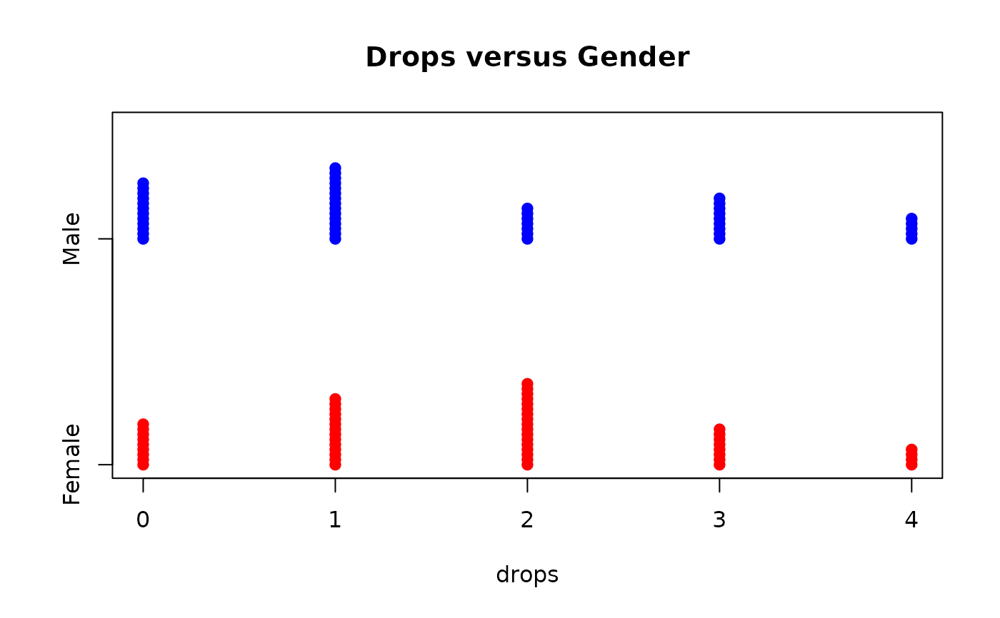

Data set describing a sample of undergraduate students
Data for Exercise 1.15
Format
A data frame with 100 observations on the following 6 variables.
- Gender
- a factor with levels
FemaleMale - Major
- a factor with levels
AccountingBiologyChemistryEnglishGeologyHistoryMathMusicPhysicsPsychologySociology - Class
- a factor with levels
FreshmanJuniorSeniorSophomore - GPA
- a numeric vector
- SAT
- a numeric vector
- Drops
- a numeric vector
References
Kitchens, L. J. (2003) Basic Statistics and Data Analysis. Duxbury
Examples
str(Undergrad)#> 'data.frame': 100 obs. of 6 variables: #> $ Gender: Factor w/ 2 levels "Female","Male": 1 1 2 1 1 2 2 1 1 2 ... #> $ Major : Factor w/ 11 levels "Accounting","Biology",..: 9 2 10 10 8 4 9 6 5 4 ... #> $ Class : Factor w/ 4 levels "Freshman","Junior",..: 4 4 3 4 3 1 4 2 1 4 ... #> $ GPA : num 3.1 1.9 3.2 2.6 2.8 2.1 3.4 2.7 2.8 3.3 ... #> $ SAT : int 1230 870 1180 1190 770 850 1440 920 990 1060 ... #> $ Drops : int 0 1 4 2 4 0 0 2 0 3 ...attach(Undergrad) stripchart(GPA~Class,method="stack",col=c("blue","red","green","lightblue"), pch=19,main="GPA versus Class")stripchart(GPA~Gender,method="stack",col=c("red","blue"),pch=19, main="GPA versus Gender")stripchart(SAT~Drops,method="stack",col=c("blue","red","green","lightblue"), pch=19,main="SAT versus Drops")stripchart(Drops~Gender,method="stack",col=c("red","blue"),pch=19, main="Drops versus Gender")detach(Undergrad)